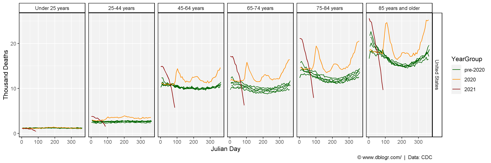
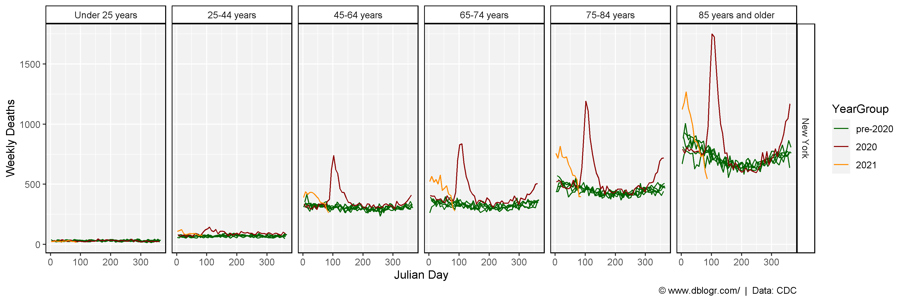
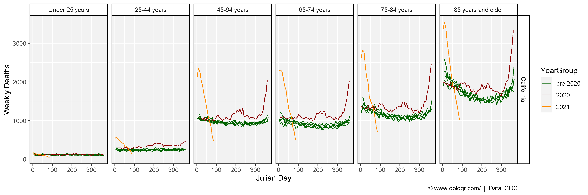
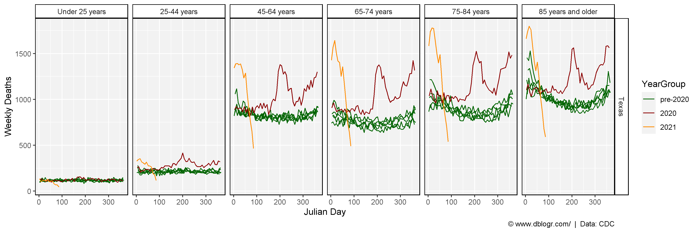
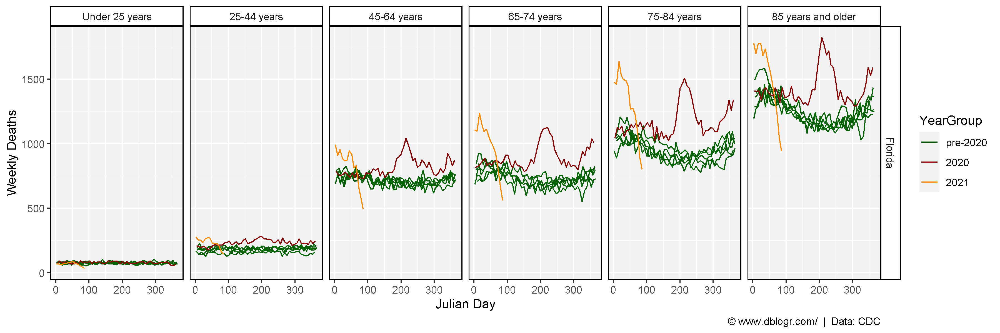
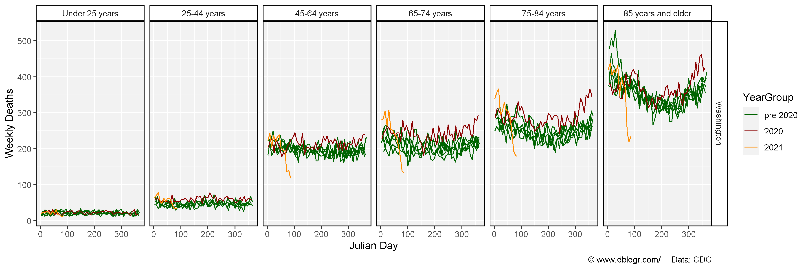
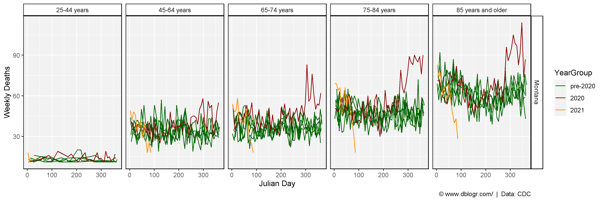
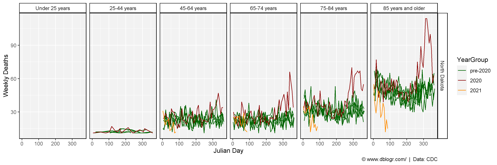
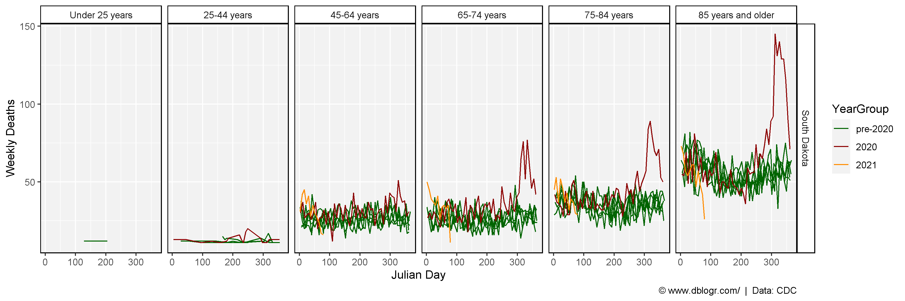

https://www.cdc.gov/nchs/nvss/vsrr/covid19/excess_deaths.htm#dashboard
# devtools::install_github("derekmichaelwright/agData")
library(agData) # Loads: tidyverse, ggpubr, ggbeeswarm, ggrepel# Prep data
ages <- c("Under 25 years", "25-44 years", "45-64 years", "65-74 years", "75-84 years", "85 years and older")
dd <- read.csv("https://data.cdc.gov/api/views/y5bj-9g5w/rows.csv?accessType=DOWNLOAD&bom=true&format=true%20target=") %>%
rename(Area=1, Date=Week.Ending.Date) %>%
mutate(Date = as.Date(Date, format = "%m/%d/%Y"),
JulianDate = lubridate::yday(Date),
Age.Group = factor(Age.Group, levels = ages),
Year = as.numeric(substr(Date, 1, 4))
)# Plotting function
deathPlot <- function(area) {
xx <- dd %>%
filter(Type == "Unweighted", Area == area) %>%
mutate(YearGroup = ifelse(Year<2020, "pre-2020", Year),
YearGroup = factor(YearGroup, levels = c("pre-2020", "2020", "2021")))
# Plot
ggplot(xx, aes(x = JulianDate, y = Number.of.Deaths)) +
geom_line(aes(group = Year, color = YearGroup)) +
facet_grid(Area ~ Age.Group) +
scale_color_manual(values = c("darkgreen", "darkred", "darkorange")) +
theme_agData() +
labs(x = "Julian Day", y = "Weekly Deaths",
caption = "\xa9 www.dblogr.com/ | Data: CDC")
}mp <- deathPlot(area = "United States")
ggsave("usa_deaths_01.png", mp, width = 12, height = 4)ggsave("featured.png", mp, width = 12, height = 4)
mp <- deathPlot(area = "New York")
ggsave("usa_deaths_02.png", mp, width = 12, height = 4)
mp <- deathPlot(area = "California")
ggsave("usa_deaths_03.png", mp, width = 12, height = 4)
mp <- deathPlot(area = "Texas")
ggsave("usa_deaths_04.png", mp, width = 12, height = 4)
mp <- deathPlot(area = "Florida")
ggsave("usa_deaths_05.png", mp, width = 12, height = 4)
mp <- deathPlot(area = "Washington")
ggsave("usa_deaths_06.png", mp, width = 12, height = 4)
mp <- deathPlot(area = "Montana")
ggsave("usa_deaths_07.png", mp, width = 12, height = 4)
mp <- deathPlot(area = "North Dakota")
ggsave("usa_deaths_08.png", mp, width = 12, height = 4)
mp <- deathPlot(area = "South Dakota")
ggsave("usa_deaths_09.png", mp, width = 12, height = 4)
© Derek Michael Wright 2020 www.dblogr.com/